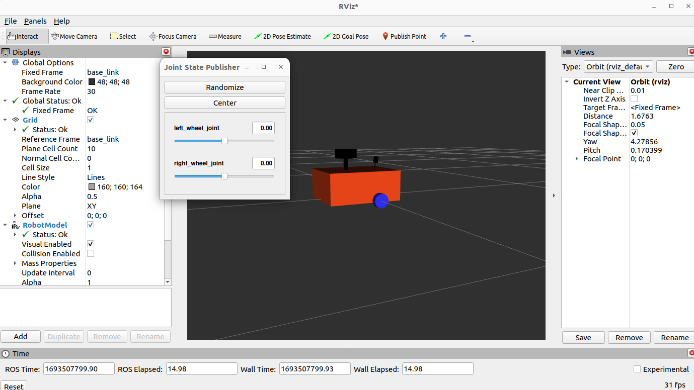

Kilobot
My First Robot in ROS2
Autore: Claudio Freddi
Introduzione
Questo documento ha lo scopo di sintetizzare:
- Le attività svolte
- I riferimenti a link nel web che ho trovato molto utili
- I problemi che ho riscontrato e le soluzione
- Riferimenti a shortcut per svolgere attività banali
List of Contents
1. Ambiente Operativo
2. Hardware Necessario
3. Installazione Software Base
4. Setup Robot
5. Run Kilobot
Code Links
Useful Tutorial Links (How To)
Ambiente Operativo
Mini PC
Nome: RobotDev
IP: 192.168.8.200
User: claudio
Questo è il PC principale da cui si sviluppa e si controllano gli altri elementi dell'architettura.
Raspberry Pi 4 B+ (RobotRPi)
Nome: RobotRPI
IP: 192.168.8.201
user: claudio
Questo è il cervello principale a bordo di Kilobot che svolge le funzioni autonome.
Wifi Router
Nome: RobotLAN
Il router è utile per creare una rete separata con IP fissi così da conoscere perfettamente come raggiungere una risorsa.

GL.iNET GL-MT300N-V2 (Mango) Mini portabile router da viaggio VPN, Mobile Hotspot in tasca, ripetitore bridge, range extender, OpenVPN Client, 300Mbps Wireless ad alte prestazioni, 128MB RAM
Arduino
Questo è l'attuatore principale dei motori perchè come microprocessore è in grado di conrtollare con più precisione alcuni aspetti.
KEYESTUDIO MEGA R3 2560 Plus Controller Board per Arduino IDE cavo USB compatibile
KEYESTUDIO Mega 2560 R3 Sensor Shield Scheda di espansione per Arduino Mega R3 Kit
Zoho Assist
Questo Software permette di connettersi al Mini PC da remoto per una gestione da out of office.
Servizio "Unattened Remote Access" (a pagamento, 120 Euro/anno fino a 25 unattended computers )
Hardware Necessario
In aggiunta a Mini PC, Raspberry , Arduino si elencano gli altri componenti utilizzati nella costruzione del robot
Yahboom ROS Expansion Board
For Raspberry Pi Jetson Nano Robot Development Board UNO R3 Electronics Project DIY With ROS1&ROS2 (ROS Expansion Board)
Lidar
Innomaker Lidar Radar incorporato DTOF 360 gradi di scansione omnidirezionale 25000 Lux Resistenza TOF Tempo di volo (LiDAR_LD19) Supporto ROS/ROS2
Braccio Meccanico
Taidda- Braccio Meccanico, 6DOF Robot Kit Braccio Meccanico Claw Kit Artiglio Manipolatore DOF Robot Industriale Parti per insegnamento Universitario
Powerbank
AXNEB Power Bank Wireless 25W PD3.0+QC4.0, 26800mah Caricatore Portatile Wireless 15W Ricarica Rapida con 4 Uscite Caricabatterie per iPhone 13 12 11

RPi GPIO Scheda di espansione
ARCELI RPi GPIO Scheda di espansione Breakout + Cavo a Nastro + Adattatore T Tipo GPIO assemblato 20 cm FC40 Cavo Piatto a Nastro 40pin per Raspberry
DC-DC USB Buck Converter Step-Down Module 6-32V 12V 24V a 5V QC 3.0
Youmile 5PCS DC-DC USB Buck Converter Step-Down Module 6-32V 12V 24V a 5V QC 3.0 Modulo di ricarica Regolatore di tensione Modulo di alimentazione con
UPC Batteria Step Up Charger Board 15W (9V)
HEEPDD Batteria Step Up Charger Board, 15W 3A Batteria Al Litio Ricarica Modulo Boost Circuito UPS Ad Alta Efficienza per Dispositivo Elettrico (9v)
Pannello solare (13 W 5 V)
Andoer Caricatore solare 13 W 5 V pannello solare con doppia porta USB cella solare in silicio policristallino per attivit� all'aperto campeggio
Scheda Driver H-bridge
Aatpuss 3 Pezzi Scheda Driver H-bridge, Modulo Driver Motore L298N, L298N Modulo H scheda Driver Bridge, per robot per Auto Intelligente Con Motore Passo-Passo
Monitor Touchscreen Portatile da 7 pollici Raspberry Pi
Beumons Monitor Touchscreen Portatile da 7 pollici Raspberry Pi,IPS da 1024X600 con monitor HDMI USB Capacitivo Pi,Compatibile con Raspberry Pi 3b+/Ra
Tastiera Bluetooth
Logitech K380 Tastiera Bluetooth Multidispositivo per Windows, Apple iOS, ?Bluetooth Wireless, Design Compatto, PC/Mac/Laptop/Smartphone/Tablet, Layou
Kit Ruote 25GA370
Kit ruote da 65 mm Motore con albero da 4 mm, motore elettrico 25GA370, mini stampante per auto per robot per auto giocattolo intelligente
Telecamera Modulo Telecamera (Raspberry)
KEYESTUDIO Raspberry Pi Telecamera Modulo Telecamera 5mp Sensore 1080p per Raspberry Pi 4 Modello A,B, B +, Modello 2, Zero
Modulo Relay 5V a 2 canali
AZDelivery 3 x Modulo Relay 5V a 2 canali con optoaccoppiatore Low-Level-Trigger compatibile con Arduino incluso un E-Book!
BATTERIA 12V 10000mAh 10Ah RICARICABILE
AFTERTECH PACCO BATTERIA PILA 12V 10000mAh 10Ah RICARICABILE AL LITIO 120x65x31mm F2D5
Controller XBox One
Installazione Software Base
OS Ubuntu su Mini PC !
Installa Ubuntu (22.04 LTS) con Dual Boot su PC Windows 11
Installa ROS2 Humble
https://docs.ros.org/en/humble/Installation/Ubuntu-Install-Debians.html
source /opt/ros/humble/setup.bash ## need to know ROS dirs source ~/dev_ws/src/install/setup.bash ## need to know ws dir
OS Ubuntu su Raspberry Pi 4 B+ (RobotRPi)
Installa Ubuntu (22.04 LTS) on Raspberry Pi
https://roboticsbackend.com/install-ubuntu-on-raspberry-pi-without-monitor/
Installa ROS2 Humble on Raspberry Pi
https://roboticsbackend.com/install-ros2-on-raspberry-pi/
source /opt/ros/humble/setup.bash ## need to know ROS dirs source ~/robotws/src/install/setup.bash ## need to know ws dir
Software Generico (per Ubuntu di utilità)
Installa IPScan
Download da sitoweb IPScan
https://angryip.org/download/#linux
poi installare dalla cartella Dowload
sudo apt install /download/ipscan_2.9.1_amd64.deb
Installa Tilix (Multi Terminal Application)
sudo apt-get install -y tilix
Installa Zoho (Remote access)
Da piattaforma zoho

Per abilitare il Remote Access in Linux (Zoho Unattended)
Per abilitare l'accesso remoto al software Linux:
- Open the file /etc/gdm/custom.conf in a text editor
- Un-comment the line: "#WaylandEnable=false" (remove the # before the line)
- Save the file and reboot the machine
Per abilitare l'accesso remoto al software Linux:
sudo apt install openssh-server # Install sudo systemctl status ssh # Check Status sudo ufw allow ssh # Enable
Installa GitHub
E' importante usare il repository di GitHub perchè permette di gestire le versioni di codice e condividere lo stesso codice tra la macchina RobotDev e RobotRp
Installazione
sudo apt install git
Configurazione
git config --global user.name claudiofreddi git config --global user.email git@claudiofreddi git config --global push.default simple
Repositories
Main Code (Min PC e Raspberry)
https://github.com/claudiofreddi/kilobot
Ardiuno Code
https://github.com/claudiofreddi/kilobot_arduino
Working Folder
Min PC
~/dev_ws/src/kilobot ~/robot_arduino/kilobot_arduino
Raspberry
~/robot_ws/src/kilobot ~/robot_arduino/kilobot_arduino
Installa GitHub
Link di riepilogo dei comandi PULL e PUSH utile
http://www.allafinedelpalo.it/git-1-introduzione-add-commit-push-pull/
Software per ROS2 (Humble)
Install Xacro e joint-state-publisher-gui
sudo apt install ros-humble-xacro ros-humble-joint-state-publisher-gui
Install Tf2 tools and Transformation
Questi sono importanti per interfacciarsi con rViz2
sudo apt-get install ros-humble-tf2-tools ros-humble-tf-transformations ros2 run tf2_tools view_frames #Check it
RViz2
Questo tool permette di vedere la struttura del robot.
Il lancio di Rviz2 deve essere preceduto da
robot_state_publisher # aspetto statico del robot joint_state_publisher_gui # aspetto dinamico del robot rviz2 # rviz2
il lancio lo su può fare con il comando
ros2 launch kilobot rsp.launch.py # lancia la sequenza
Utilizza i dati della cartella "\Description\*.xacro" dei file xacro.
Turtlesim
Per eseguire la Turtlesim lanciare
ros2 run turtlesim turtlesim_node
Joystick
Per attivare il Joystick lanciare
ros2 run launch kilobot joystick.launch.py
che esegue
ros2 joy joy_node # with params ros2 teleop_twist_joy teleop_node # with params and remap '/cmd_vel' => '/turtle1/cmd_vel0
controllo con
ros2 topic echo __/turtle1/cmd_vel__ # esito del topic ros2 run joy joy_enumarate_devices # elenco device e ID controller (es. 0)
Although splitting things up might seem more complex, it means that we don’t need to rewrite the Twist calculations for every joystick out there, and we don’t need to rewrite the joystick driver code for every possible application.
(from https://articulatedrobotics.xyz/mobile-robot-14a-teleop/)
GAZEBO
Per installazione
sudo apt install ros-humble-gazebo-ros-pkgs
Esecuzione
ros2 run gazebo_ros spawn_entity.py -topic robot_description -entity some_name ros2 launch gazebo_ros gazebo.launch.py world:=src/robot_testing/worlds/world6.world
Joystick Driver
Per l'installazione del joystick ho trovato qualche difficoltà con il joystick della XBOX One finchè non ho trovato questo link utilissimo.
https://atar-axis.github.io/xpadneo/
Estratto solo per XBox One
Prerequisites
Make sure you have installed dkms, linux headers and a bluetooth implementation (e.g. bluez) and their dependencies.
On Debian based systems (like Ubuntu) you can install those packages by running
sudo apt-get install dkms linux-headers-`uname -r`
Installation
Download the Repository to your local machine
git clone https://github.com/atar-axis/xpadneo.git cd xpadneo
run
sudo ./install.sh
Connection
sudo bluetoothctl [bluetooth]# scan on
wait until all available devices are listed (otherwise it may be hard to identify which one is the gamepad) push the connect button on upper side of the gamepad, and hold it down until the light starts flashing fast
wait for the gamepad to show up in bluetoothctl, remember the address (e.g. C8:3F:26:XX:XX:XX)
[bluetooth]# scan off to stop scanning as it may interfere with properly pairing the controller [bluetooth]# pair <MAC> [bluetooth]# trust <MAC> [bluetooth]# connect <MAC> (should usually not be needed but there are open bugs)
The < MAC > parameter is optional if the command line already shows the controller name
Configuration
Use
sudo ./configure.sh
to configure the driver as you wish. The script will guide you through the available options.
Update
In order to update xpadneo, do the following
Update your cloned repo:
git pull
Run
sudo ./update.sh
Uninstallation
Run
sudo ./uninstall.sh
to remove all installed versions of hid-xpadneo.
Joystick Configuration
Per la configurazione ed utilizzo del Joystick ho trovato molto utile questo link
https://articulatedrobotics.xyz/mobile-robot-14a-teleop/
To check our gamepad works in Linux, we want to install some useful tools:
sudo apt install joystick jstest-gtk evtest
With the controller connected (e.g. via USB or Bluetooth), we can open a terminal and run evtest.
In ROS2 to check available controllers, run
ros2 run joy joy_enumerate_devices
ros2 run joy joy_node # <-- Run in first terminal (running the node) ros2 topic echo /joy # <-- Run in second terminal (displaying the outputs)
Setup Robot
Motor Connections Mode

Run Kilobot
Code Links
ROS Arduino Bridge (Josh Newans)
Questa implementazione abilita Arduino
https://github.com/joshnewans/ros_arduino_bridge/tree/main/ROSArduinoBridge
ROS Arduino Bridge (Original - HomeBrew Robotics Club)
https://github.com/hbrobotics/ros_arduino_bridge
PySerial (Serial comunicartion Python)
This module encapsulates the access for the serial port. It provides backends for Python running on Windows, OSX, Linux, BSD (possibly any POSIX compliant system) and IronPython. The module named "serial" automatically selects the appropriate backend.
https://github.com/pyserial/pyserial/tree/master
YAHBOOM Robot Shield
http://www.yahboom.net/study/ROS-Driver-Board
Useful Tutorial Links
ROS2 Humble Documentation
https://docs.ros.org/en/humble/
ROS2 Tutorial (Josh Newans)
Utilissimo sia per la costruzione del robot che per la parte teorica
https://articulatedrobotics.xyz
GitHub Basics
http://www.allafinedelpalo.it/git-1-introduzione-add-commit-push-pull/
Flash Arduino da Raspberry da remoto (Josh Newans)
Spiega come caricare del software su Arduino da remoto, ovvero connettendosi con Visual Studio dalla macchina RobotDev a RobotRPI a cui è connesso Arduino con USB seriale
https://www.youtube.com/watch?v=2BJ-iJF04VA&list=RDCMUCx9vSJTSZGFrErfPtut5GNQ&index=21
Connessione Raspberry e Arduino (modalità possibili)
How to Connect and Interface a Raspberry Pi With an Arduino ?
The Ultimate Guide to using Motors in Robotics (including ROS, Raspberry Pi) - Connect Motor Shield
https://www.youtube.com/watch?v=-PCuDnpgiew
99. Useful Commands
Connessione a RoborRPI
ssh claudio@192.168.8.201
TEST LISTENER and TALKER
Per verificare se il sistema funzione
ros2 run demo_nodes_py listener ros2 run demo_nodes_py talker
Sourcing Folder (/home/.bashrc)
source /opt/ros/humble/setup.bash ## need to know ROS dirs # MiniPC source ~/dev_ws/src/install/setup.bash ## need to know ws dir # Raspberry source ~/robotws/src/install/setup.bash ## need to know ws dir
Compiling Code
colcon build --symlink-install
Show ROS Nodes Graph
ros2 run rqt_graph rqt_graph
Run RViz2
ros2 launch kilobot rsp.launch.py


JOYSTICK check available controllers
ros2 run joy joy_enumerate_devices
Run Joystick
Connect Joystick
ros2 launch kilobot joystick.launch.py ros2 run turtlesim turtlesim_node
verfica
ros2 topic list /joy /joy/set_feedback /parameter_events /rosout /turtle1/cmd_vel /turtle1/color_sensor /turtle1/pose
Config file: /home/claudio/dev_ws/src/kilobot/config/joystick.yaml
... require_enable_button: true # press key to use enable_button: 6 # Left shoulder button enable_turbo_button: 7 # Right shoulder button ...
SAMPLE
Nested HTML
Simple Link to HTML
Image sized
Nested SQL with height
SQL
JSON Risorsa
Gray Title
Bold And Underlined
Table
| Col 1 | Col 2 |
|---|---|
| Val 1 | Val 2 |
| Val 1 | Val 2 |
| Val 1 | Val 2 |